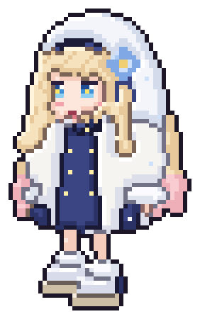
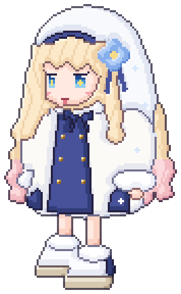
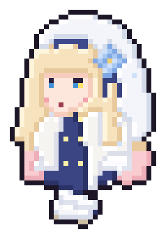
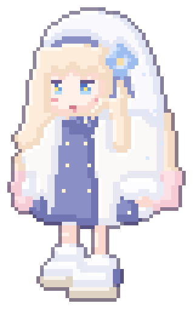
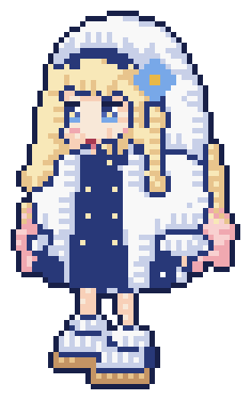

검은 1px 외곽선, 4단 파스텔 명암, 머릿결 선. 보내준 참고 스프라이트에 가장 가깝습니다.
원화와 참고 스프라이트를 기준으로 직접 찍은 도트 대기 자세 5종입니다. 45도로 내려다본 시점에서 이리스가 화면 왼쪽 아래를 봅니다.
게임 화면에서 2배로 확대해 쓰는 경우의 크기입니다. 원본 PNG는 무접미 파일입니다.

검은 1px 외곽선, 4단 파스텔 명암, 머릿결 선. 보내준 참고 스프라이트에 가장 가깝습니다.

5단 명암과 색이 든 외곽선(셀아웃)으로 부드럽게 정리했습니다. 별 동공과 단추가 가장 또렷합니다.

약 2등신으로 머리를 키우고 몸을 줄였습니다. 화면에 캐릭터가 많을 때 유리하지만 소매와 후드 자락이 붙어 보입니다.

검은 선 없이 주변 색을 어둡게 한 외곽만 썼습니다. 가장 부드럽지만 밝은 바닥에서는 윤곽이 약합니다.

제한 팔레트와 남색 외곽선을 쓰고, 그림자와 분홍 머리끝을 체크무늬 디더로 표현했습니다.